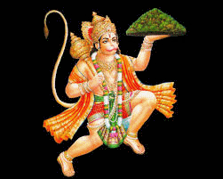

।।दोहा।।
श्री गुरु चरण सरोज रज, निज मन मुकुर सुधार |
बरनौ रघुवर बिमल जसु , जो दायक फल चारि |
बुद्धिहीन तनु जानि के , सुमिरौ पवन कुमार |
बल बुद्धि विद्या देहु मोहि हरहु कलेश विकार ||
।।चौपाई।।
जय हनुमान ज्ञान गुन सागर, जय कपीस तिंहु लोक उजागर |
रामदूत अतुलित बल धामा अंजनि पुत्र पवन सुत नामा ||2||
महाबीर बिक्रम बजरंगी कुमति निवार सुमति के संगी |
कंचन बरन बिराज सुबेसा, कान्हन कुण्डल कुंचित केसा ||4|
हाथ ब्रज औ ध्वजा विराजे कान्धे मूंज जनेऊ साजे |
शंकर सुवन केसरी नन्दन तेज प्रताप महा जग बन्दन ||6|
विद्यावान गुनी अति चातुर राम काज करिबे को आतुर |
प्रभु चरित्र सुनिबे को रसिया रामलखन सीता मन बसिया ||8||
सूक्ष्म रूप धरि सियंहि दिखावा बिकट रूप धरि लंक जरावा |
भीम रूप धरि असुर संहारे रामचन्द्र के काज सवारे ||10||
लाये सजीवन लखन जियाये श्री रघुबीर हरषि उर लाये |
रघुपति कीन्हि बहुत बड़ाई तुम मम प्रिय भरत सम भाई ||12||
सहस बदन तुम्हरो जस गावें अस कहि श्रीपति कण्ठ लगावें |
सनकादिक ब्रह्मादि मुनीसा नारद सारद सहित अहीसा ||14||
जम कुबेर दिगपाल कहाँ ते कबि कोबिद कहि सके कहाँ ते |
तुम उपकार सुग्रीवहिं कीन्हा राम मिलाय राज पद दीन्हा ||16||
तुम्हरो मन्त्र विभीषन माना लंकेश्वर भये सब जग जाना |
जुग सहस्र जोजन पर भानु लील्यो ताहि मधुर फल जानु ||18|
प्रभु मुद्रिका मेलि मुख मांहि जलधि लाँघ गये अचरज नाहिं |
दुर्गम काज जगत के जेते सुगम अनुग्रह तुम्हरे तेते ||20||
राम दुवारे तुम रखवारे होत न आज्ञा बिनु पैसारे |
सब सुख लहे तुम्हारी सरना तुम रक्षक काहें को डरना ||22||
आपन तेज सम्हारो आपे तीनों लोक हाँक ते काँपे |
भूत पिशाच निकट नहीं आवें महाबीर जब नाम सुनावें ||24||
नासे रोग हरे सब पीरा जपत निरंतर हनुमत बीरा |
संकट ते हनुमान छुड़ावें मन क्रम बचन ध्यान जो लावें ||26||
सब पर राम तपस्वी राजा तिनके काज सकल तुम साजा |
और मनोरथ जो कोई लावे सोई अमित जीवन फल पावे ||28||
चारों जुग परताप तुम्हारा है परसिद्ध जगत उजियारा |
साधु संत के तुम रखवारे। असुर निकंदन राम दुलारे ||30||
अष्ट सिद्धि नौ निधि के दाता। अस बर दीन्ह जानकी माता
राम रसायन तुम्हरे पासा सदा रहो रघुपति के दासा ||32||
तुम्हरे भजन राम को पावें जनम जनम के दुख बिसरावें |
अन्त काल रघुबर पुर जाई जहाँ जन्म हरि भक्त कहाई ||34||
और देवता चित्त न धरई हनुमत सेई सर्व सुख करई |
संकट कटे मिटे सब पीरा जपत निरन्तर हनुमत बलबीरा ||36||
जय जय जय हनुमान गोसाईं कृपा करो गुरुदेव की नाईं |
जो सत बार पाठ कर कोई छूटई बन्दि महासुख होई ||38||
जो यह पाठ पढे हनुमान चालीसा होय सिद्धि साखी गौरीसा |
तुलसीदास सदा हरि चेरा कीजै नाथ हृदय मँह डेरा ||40||
।।दोहा।।
पवन तनय संकट हरन मंगल मूरति रूप |
राम लखन सीता सहित हृदय बसहु सुर भूप ||
आरति कीजै हनुमान लला की |
दुष्ट दलन रघुनाथ कला की ||
जाके बल से गिरिवर कांपै |
रोग - दोष जाके निकट न झांपै ||
अंजनी पुत्र महा बलदाई |
सन्तन के प्रेम सदा सहाई ||
दे बीरा रघुनाथ पठाये |
लंका जारि सिया सुधि लाये ||
लंका सो कोट समुद्र सी खाई |
जात पवनसुत बार न लाई||
लंक जारि असुर संहारे |
सिया रामजी के काज सँवारे ||
लक्ष्मण मूर्छित पड़े सकारे |
आनि सजीवन प्रान उबारे||
पैठि पताल तोरि जम - कारे |
अहिरावन की भुजा उखारे ||
बायें भुजा असुर दल मारे |
दहिने भुजा सन्तजन तारे ||
सुर नर मुनि आरती उतारे |
जै जै जै हनुमान उचारे ||
कंचन थार कपूर लौ छाई |
आरती करत अंजना माई ||
जो हनुमान जी की आरती गावै |
बसि बैकुंठ परम पद पावै ||
लंक विध्वंस किये रघुराई |
तुलसीदास स्वामी कीर्ति गाई ||
आरति कीजै हनुमान लला की |
दुष्ट दलन रघुनाथ कला की ||
We are a team of Jindal Informatics. The Jindal Informatics is owned by Advocate D. P. Jindal
Sh. D. P. Jindal is a retired Dy. Manager of State Bank of India.
Now he is practicing as an Advocate Using/Making Internet Site and Mobile Applications is his Passion
A software for Advocates to maintain his case diary, contacts, fee and daily cause list
Hindu Marriage Act, 1955; a bare act with comments for advocates
This Bare Act is a must for every advocate. This bare act is "Code of Criminal Procedure, 1973 which is updated as per Criminal Law (Amendment) Act, 2013
A Devotional App for Aartis, Chalisas, Bhajans and Matra. This app is for chanting as well listening. For listening internet connection is required.